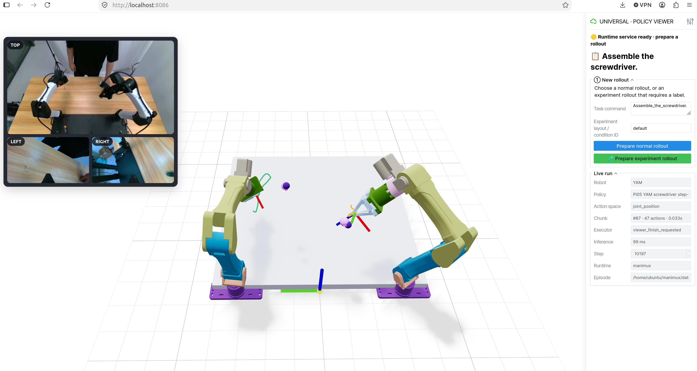

先理解边界
模型服务
加载 checkpoint、norm stats 和官方推理代码，监听自己的 WebSocket 端口。
ManiMux Runtime
连接相机、模型和机器人，执行 Timeline、算法、Safety、Recorder 与 home。
Viewer
只发送操作请求并展示状态。相机下方的双轨时间线会交替显示正在采样与正在执行的 chunk，并标出 RTC overlap、trim 和被替换的旧尾部。它不会自动加载、切换或杀掉模型服务。
run.task，在 Prepare 前可以编辑；policy_label只是显示名。

四个终端启动
以下使用 Pi05 红球任务作为示例。真机前仍需完成对应 runbook 的急停、CAN、工作区和 checkpoint 检查。
1Camera
cd /home/ubuntu/manimux envs/yam/.venv/bin/manimux-camera-server \ --config configs/cameras.yaml
2Viewer
cd /home/ubuntu/manimux envs/yam/.venv/bin/manimux-viewer \ --robot yam --host 0.0.0.0 --port 8086
3Policy server
cd /home/ubuntu/manimux XPolicyLab/policy/Pi_05/openpi/.venv/bin/python \ scripts/servers/pi05_yam_server.py \ --config configs/pi05/yam/server/finetune-pick-red-ball-box-step1000.yaml
4Runtime service
cd /home/ubuntu/manimux envs/yam/.venv/bin/manimux serve \ --config configs/pi05/yam/infra/rtc-pick-red-ball-box-step1000.yaml
http://localhost:8086。先确认 policy server 已完成加载并监听端口，再点击 Prepare。
manimux serve可以长期保持；一次 rollout 失败后仍会回到等待下一次 Prepare。
一次 rollout 的完整流程
填写任务
确认 Task command；实验模式填写 layout/condition ID。
选择类型
Normal 不要求人工标签；Experiment 结束后必须打标。
等待就绪
模型身份、相机、RobotDriver 和初始状态检查通过后才进入此状态。
Start rollout
Runtime 开始提交模型动作。需要临时保持时使用 Pause / Hold。
Finish & Home
停止执行、保存 episode，并执行配置中的 home 路径。
Normal 与 Experiment
| 模式 | 用途 | 结束后 |
|---|---|---|
| Normal rollout | 调试、观察模型、检查链路 | 保存轨迹和视频，不强制人工 reward |
| Experiment rollout | 正式实验或 calibration | 填写 task result、smoothness、reviewer 和失败标签后保存 |
按钮到底做什么
| 按钮 | 效果 | 是否结束 episode |
|---|---|---|
| Prepare normal rollout | 用当前任务创建普通 rollout，并等待 runtime 进入 PAUSED | 否 |
| Prepare experiment rollout | 创建需要人工评价的 rollout | 否 |
| Start rollout / Resume rollout | 首次开始或从 Pause / Hold 继续 | 否 |
| Pause / Hold | 保持当前机器人命令，不回 home，不关闭 episode | 否 |
| Finish & Home | 请求停止、保存并按配置 home | 是 |
| Return Home | Advanced recovery 中的人工恢复操作；只在暂停状态使用 | 否 |
状态与故障提示
| 提示 | 含义 | 下一步 |
|---|---|---|
| Waiting for runtime | Viewer 已开，但没有收到 manimux serve 心跳 | 启动或检查 runtime service |
| Connected · PAUSED | 一次 rollout 已准备好，但尚未执行模型动作 | 检查现场后点击 Start rollout |
| Connection refused :8500 | Policy worker 无法连接模型服务 | 确认模型服务完成加载并监听正确端口；不必重启仍在等待的 serve |
| Backend identity mismatch | 端口上的 checkpoint、任务或 norm stats 与 infra config 不一致 | 不要继续；部署正确 server config，或选择匹配的 infra config |
| Executor heartbeat lost | 当前 runtime 已退出或失联 | 确认机器人安全状态；重新启动 serve 会创建新 session |
kill -9 无法执行清理和 home。普通 Ctrl-C/SIGTERM 才能进入 ManiMux 的有序停止路径。
无论软件显示什么，重连前都要读取真实关节反馈并确认机器人状态。
数据保存在哪里
根目录由 infra config 的 run.output_dir 决定。每次 serve 创建独立 session：
data/experiments/<task>/<runtime>/
└── session-<timestamp>-<id>/
├── session-manifest.json
└── rollout-001/
├── meta.json
├── result.json
├── data.zarr/
├── videos/
│ ├── index.json
│ └── *.mp4
└── evaluation/
└── human-label.json
session-manifest.json保存 config 路径、哈希和 Git revision。data.zarr保存 observation、模型 chunk、命令与实测状态。evaluation/human-label.json只在人工评价保存后出现。- 中断产生的
*.partial保留用于诊断，正式汇总时应显式排除。
开始前的 20 秒检查
软件
- 三路相机画面正常且没有持续闪烁
- Policy server 端口已经 LISTEN
- Task command 与本次任务一致
- Policy label 与 checkpoint 身份没有混淆
现场
- 急停可触达，工作区无人
- 物体布局与 layout/condition ID 一致
- 机器人真实姿态与 Viewer 基本一致
- 正式实验前完成对应模型 runbook preflight
常见问题
每次重启 Viewer 都要重启模型服务吗？
不需要。Viewer、模型服务和 manimux serve是独立进程。只重启 Viewer 不会卸载模型。
修改 Task command 会自动切换权重吗？
不会。它只改变本次 rollout 发给模型的语言指令。切换训练任务或 checkpoint 仍需部署对应 server config，并使用匹配的 infra config。
为什么 Prepare 是灰色？
通常是 runtime service 心跳未到、已有 rollout 尚未结束，或 experiment rollout 的人工评价尚未保存。看页面顶部当前阶段提示，不要反复点击。
Finish 后还能继续同一个 rollout 吗？
不能。Finish 会结束并保存当前 episode。下一次操作从新的 Prepare 开始，并写入新的 rollout 目录。